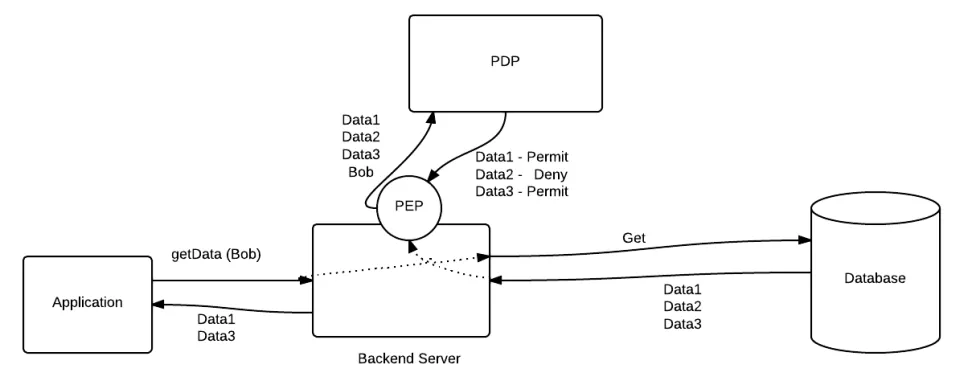
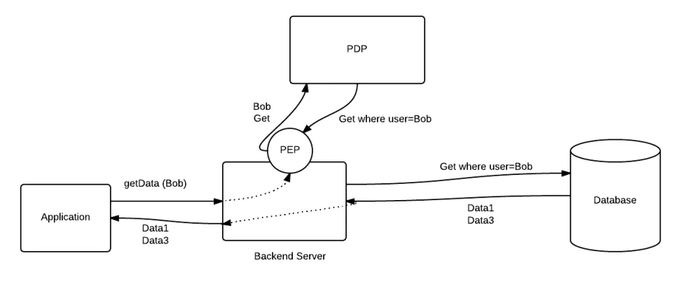
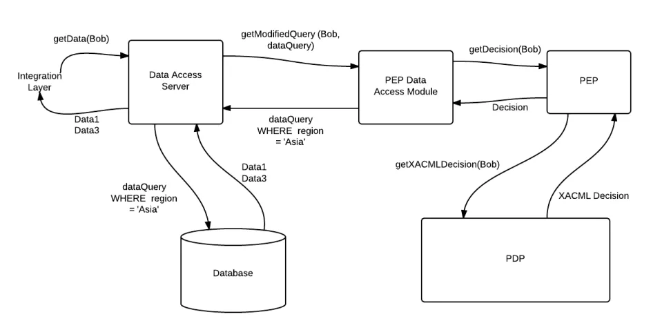

Access Control for Data Access Layer with XACML
原文地址 http://xacmlinfo.org/2014/03/28/access-control-for-data-access-layer-with-xacml/
Lets try to understand how XACML can be used to filter out authorized data from data access layer. Also let learn how we can implement data filtering sample with using open source XACML engine. First it is better to understand sample use case for this.
Use Case
- KDiamond is company that sells Diamond all other world. And it stores its sales figures in a database.
- Every employee in the KDiamond Sale department can access this database and retrieve sales figures.
- There are many large number of employees in the Sale department across several regions and there are many large number of entries in the database as well.
- Earlier employee in Sale department can retrieve all Sales figures. But as number of employee are grown…. As this database contains highly sensitive data,, KDiamond wants to provide some access control on these data. It means that all employee are not able to access all data and only the authorized data must be accessed.
Solution
As there are large number of data to filter out, It is not feasible to do this in presentation or integration layer.. Because it can cause for performance bottlenecks in the system and also KDiamond needs more attention on data security as sensitive data are transported from one layer to another. Therefore best option is to filter the authorized data from the data layer.. i.e at database level. There are two ways that data can be filtered out.
1. Filter authorized data returned from database.

2. Modify input parameters according to the authorization, before retrieve the data from database.

If there are large number of data set to filter out… Better approach is to modify the input parameter….
Implementing Sample
Assume, There are three employee in the sales department …
Bob – Sale Person who is working on Asia region. He is assigned to SalePerson group
Alice – Region Sales Manager in Asia region. She is assigned to SaleManager group
Peter – Global Sales Manager. He is assigned to SaleManager role
Let go through steps to setup this sample with WSO2 Identity Server….
Step 1. Connect Identity Server in to KDiamond user store. You can edit user-mgt.xml file of the Identity Server to connect it to any user store.
Here i have used the embedded LDAP server that is shipped with Identity Server by default. Therefore i have created these users and groups in the LDAP using Identity Server management console… You can create LDAP users called Bob, Alice and Peter and LDAP groups called SalePerson and SaleManager, then assign them to respective groups.
By default, Identity Server user store act as a PIP for its PDP. Therefore, user attributes and groups can be retrieved from LDAP user store for policy evaluation. In XACML Policy user attributes (or groups) can be defined and differently identified using unique attributeId. This attributeId must be known by the PIP to retrieve the attribute from the user store. Matching between attributeId and the user store attribute must be in the PIP level. But when your using Identity Server user store as default PIP, This mapping can be done using claim management feature in Identity Server. More details on claim management feature can be found at here
Step 2. Add these three policies in to PDP of Identity Sever. You can refer more details on adding policies to PDP runtime from here.
1. Access Policy – Sales data can be view by only the employees in Sale department.. that is, employees who are assigned to SalePerson and SaleManager groups. Sales data can be only shared and deleted by Sale Managers
2. Region Policy – Sales data related specific region must be read by who are in that region or who are in global sale managers
3. Value Policy – If sales data related to more than $50 000 value, Sales person can not see the name of the client details. But Sale Managers can see.
Step 3. Download the KDiamond sample from here. This is a command line sample and all dependent libraries can be found inside lib directory in sample location. This sample contains a PEP data access module that modifies the data access queries. You can find the implementation of this module from here. It is a simple module that extracts the Advice elements from XACML response and modifies the given Queries.
Let me explain further what is happening here…..
There are four policies, If you just look at Region, Value and Type Policies.. You can see Advice expression that has been configured. These Advice expressions return some input and output controllers according to the query language that you are using to access the data. As an example, in above polices I have define the SQL based controllers. But it can be any String values according to your data access language.
Once XACML response is received to the PEP data access module, It extracts input and output controllers from XACML Advice elements. Then PEP module can load the relevant query processor to modify the data access queries with input and output controllers. Query processor is an implementation, that you need to implement according to your data access query language. Here i am using SQL, Therefore i have SQL based query processor that processes the query that is given by the KDiamond and the input and output controllers that have been taken from Advice elements. Query processor knows how to process them and create the modified and the authorized query to access the data.
Following diagram would further help you to understand this process….

Share this:
Related posts:
- XACML based Access Control for Web Applications
- XACML Sample for On-line Trading Application -1
- Use XACML Advice elements to generate detail decisions.
- Authorization for Hierarchical Resources with XACML Multiple Decision Profile
Discuss this article on Stack Overflow
Copyright © 2015 Powered by MWeb, Theme used GitHub CSS.